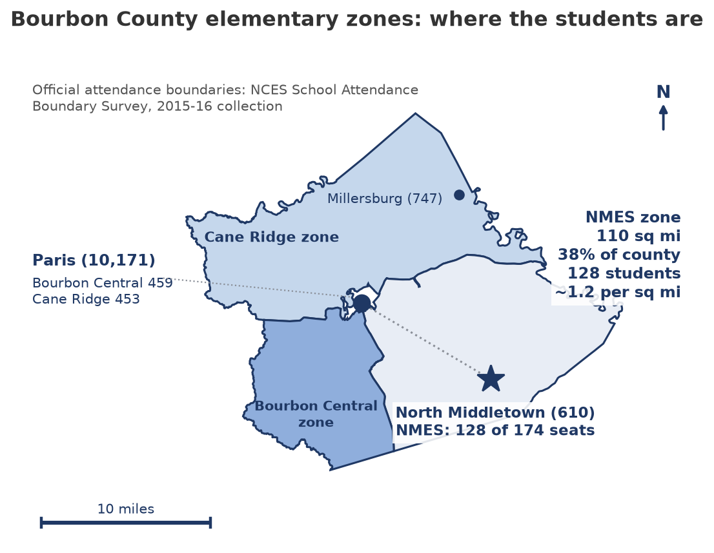
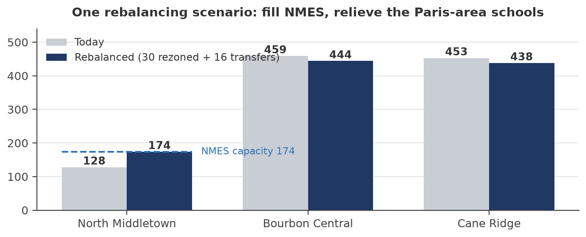

The district's best elementary school is the one on the chopping block. On July 15, 2026, a planning committee voted to reclassify North Middletown Elementary as transitional, the first step toward closing it. I went through the district's own audits, state data, and two decades of public records. Here is what the numbers say. Every one of them is checkable, and I want you to check them.
Written by Dr. Ryan Bradley, a former NMES King, with the help of an AI research assistant. Built from public records only. Full report and financial model at the bottom of this page.
The district ran a General Fund deficit of $2.65 million last year before transfers, after $2.54 million the year before; two years running is what makes it structural. Reserves are falling by about $1.1 million a year. I do not dispute any of that. The question is whether closing a 128-student school fixes it. It does not come close.
Federal pandemic aid wound down, taking about $2.95 million a year with it, and attendance-based state funding fell with roughly 248 fewer funded students in average daily attendance once the pandemic hold-harmless ended. Meanwhile, costs the district controls grew fast: central-office administration rose 44.8 percent in two years.
A fair caution I print beside this number: Kentucky audits fold state pension allocations into these expense lines, so some share may be accounting rather than hiring. That is why the report asks for a position-by-position accounting instead of assuming the worst.
Statement of Activities, both auditsBourbon County Schools taxes real estate at 52.4 cents per $100, second lowest of nine area districts and roughly 13 cents below the statewide school average. The board also holds a no-recall option to raise revenue 4 percent a year. The math is simple and it does not bend: either spending comes down or revenue goes up. Standing idle is the one answer I rule out.
KY Dept. of Revenue 2025 rate book · Fayette and Clark from board-vote reportingKentucky law walls building money off from operating money; none of it can pay teachers. The $6.055 million bond issued in 2024 flowed into the construction fund, where construction in progress grew from $3.65 million to $7.41 million in one year, and it is why the district's debt payments jump this year. No bond on record names NMES. And closing a school creates no borrowing room: bonding capacity is built from restricted streams, a $100 per student state allotment and the nickel building tax, that do not grow when a school closes. The FY2024 audit already showed about $23.5 million in unused capacity. Section 6 of the report walks through the statute and breaks out every component.
FY2025 audit, Note 4 · 702 KAR 4:160 · KRS 157.420Toggle the schools below. North Middletown outscores every elementary in the county, in either district, and every one in neighboring Clark County. The schools designated to receive its students sit in the bottom quarter of the state.
SchoolDigger's normalized 0-100 score computed from state test data, a consistent cross-year yardstick, not KDE's official rating. No statewide tests in 2020; NMES 2021 not reported.
SchoolDigger, NMES year tableThe building held 261 children at its peak. It holds 128 today against a rated capacity of 174. The seats exist; the plan to fill them, through redistricting and cross-county enrollment on quality, is in the full report.
Federal enrollment history · 2021 state facility plan (capacity 174)These calculators run the same math as the full report and financial model. Move the sliders. Use the district's assumptions or your own. The conclusion is hard to escape either way.
What does closing NMES actually save, once teachers follow students, buses roll farther, and some families leave the district and take state funding with them? Departures are costed at the $4,626 SEEK base for fiscal 2027, the first year a closure could take effect.
State law lets the board raise property-tax revenue 4 percent a year from existing property, no recall exposure. It compounds. Slide the years.
Basis: KRS 160.470, applied to fiscal 2025 collections of $9,641,017. The levy is one option, not the only one. But revenue or reductions, the board must choose one and own it.
Rebalance attendance boundaries and recruit cross-county transfers until NMES reaches its rated 174. Each transfer brings the state's $4,626 per-student funding at the fiscal 2027 base; Section 9 of the report shows the full math.
Rezoned students already ride district buses about ten miles to the Paris schools today; moving them to the school they live closest to should shorten routes, not lengthen them, an assumption the district can test against its real routing data. Transfers bring the state SEEK base with them, and the district sets its own busing policy for them. The state's frozen transportation budget reimburses nothing on new miles, which is closure's problem, not this plan's.
Conservative, sourced, and adjustable in the downloadable model. Even the low end beats the most generous closure estimate, and none of it takes a school from a town.
Half the county's people live in Paris, where both receiving schools sit. The official federal boundary file (School Attendance Boundary Survey, 2015-16) puts the NMES zone at 110 square miles, 38 percent of the county, at roughly 1.2 students per square mile, the exact variable state law funds busing on. Cane Ridge's zone serves the north, Bourbon Central's the southwest. Closing the one eastern school keeps every square mile of that territory and serves it with longer rides, about four road miles more each way on average and up to ten from town; rebalancing shortens them. Boston proved the routing upside is real: an MIT algorithm made its routes 20 percent more efficient and saved $5 million in one year.


Official zones: NCES School Attendance Boundary Survey, 2015-16 · fetched by the repo's query script · Boston-MIT routing study| Measure | Type | Estimated annual value |
|---|---|---|
| Take the 4 percent revenue option (year one; compounds thereafter) | New revenue | $386,000 |
| Fill NMES to capacity: rebalance boundaries and recruit cross-county transfers | New revenue, net | $140,000 to $225,000 |
| Recover part of ordinary tax delinquencies | New revenue | $60,000 to $120,000 |
| Trim central-office growth back toward its FY2023 level | Cost reduction | $200,000 to $450,000 |
| Transportation efficiency review (routing, fleet, fuel) | Cost reduction | $145,000 to $290,000 |
| Medicaid billing, energy performance, and shared services | Mixed | $170,000 to $400,000 |
Figures are estimates with stated assumptions; the exact basis, a confidence rating, and what would firm up each line are in the report and the downloadable model. Ranges overlap and are trimmed in the combined total. New revenue and cost reductions are different things; the menu names which is which, and both close the same gap.
The question is not closure versus no closure. It is which complete plan produces the best verified five-year result. Illustrative straight-line projection from the FY2025 balance; the math is in the report's Section 12 and the downloadable model's Scenarios tab. Closure's one-time transition costs are unpublished and not included.
| Plan | Recurring impact by year 3 | Reserves in 2029 |
|---|---|---|
| 1. Keep NMES open, current trajectory | None | Below zero |
| 2. Close NMES and consolidate | $250,000 to $600,000 | About $0.8M |
| 3. Keep NMES open, rebalance and grow | $140,000 to $225,000 | About $0.1M |
| 4. Districtwide recovery plan (menu plus levy) | $1.1 to $2.1 million | About $3.7M |
Plan 2 buys roughly one extra year of runway and takes a school from a town. Plan 4 restores balance and closes nothing. Plans 3 and 4 combine.
These are not rhetorical. Each has a document behind it that the administration either already holds or should be required to produce. Tap to read.
Line by line: costs that truly disappear, minus added transportation, receiving-school costs, and the carrying or disposal cost of the building.
How does it reconcile with the state's published per-student spending data for the school? And which enrollment count is being used? Federal data show 128 students, while public statements have ranged lower.
What staff, sections, or space must be added to absorb 128 more children, at what cost, from which fund?
Publish the modeled routes and the longest one-way ride a North Middletown kindergartner would face.
The new architect-and-engineer assessment: what renovation figure does it attach, and who prepared it?
Which are General Fund dollars, and which are restricted facility dollars that cannot pay a single salary?
Publish the official statement and the BG-1, and state when NMES last received meaningful capital investment.
What rollback is on the table before a school closes? Publish administrator compensation from the official state records.
For children moved from a school scoring 58.2 into schools scoring 26.5 and 19.3, and what happens to the district's Title I allocations when they move?
If none, why is closure first on the list rather than last?
Every estimate in this analysis is built to be replaced by a district document. Kentucky's Open Records Act (KRS 61.870 to 61.884; request procedures in KRS 61.872) entitles any resident to these on request to the district's records custodian, with a response due in five business days. Fifteen requests, four groups:
The money. The net-savings worksheet behind the "over a million dollars" statement. Any alternatives modeling the administration has performed. Administrator compensation, position by position, five years. The levy rate-type history and the General Fund vs building fund cent split.
The buildings and bonds. The 2024 bond official statement and BG-1, and the 2023 bond's purpose. KDE's bonding potential statement. The NMES condition assessment, with its author. The room-by-room worksheet behind the 174 capacity rating, and the pre-2021 facility plans.
The boundaries and buses. The district's GIS attendance-zone map. Geocoded student counts by attendance area. The T-1 transportation report, route sheets, and cost per bus-mile. Modeled post-closure routes and the longest one-way ride for the youngest riders.
The students. The academic transition plan and Title I reallocation analysis. Grade-by-grade capacity and space at Bourbon Central and Cane Ridge. School-level climate and safety survey results for all three elementaries.
Nothing here seeks student-identifiable information. The full table, with what each item settles, is Appendix B of the report. Some checks need no request at all: the federal School Attendance Boundary Survey published the district's attendance-zone boundaries as free GIS files, and NCES publishes geocoded school locations.
Community meeting at the North Middletown Community Center, next to the fire department on Church Street. Children are invited to write a love letter to the school. Bring your neighbors.
The committee that voted "transitional" meets again on the draft facility plan. Its vote is advisory; the audience is not.
Add your name to the petition asking the board to pause any vote until the ten questions are answered in writing.
Sign the petitionSuperintendent Larry Begley and board members Bradley Purcell (chairman), Jonathan Ott (vice chairman), Mandy Thornberry, Miranda Wyles, and Shane Buckler. The button below starts an email to the superintendent and all five board members; addresses are also on the district board page. Ask for one thing: answers in writing before any vote.
Start an email Call the central office: 859-987-2180What did this school mean to you? Real stories from real Kings belong in this record. Every story is reviewed and verified before anything appears anywhere; include your name, your connection to the school, and a phone number so we can confirm it is really you. Nothing is published without your permission.
Share your storyThe 28-page report and the complete financial model behind every number on this page.
Download the report (PDF) Download the model (Excel)Every figure on this page traces to one of these. If you find an error, tell me and I will correct it publicly.